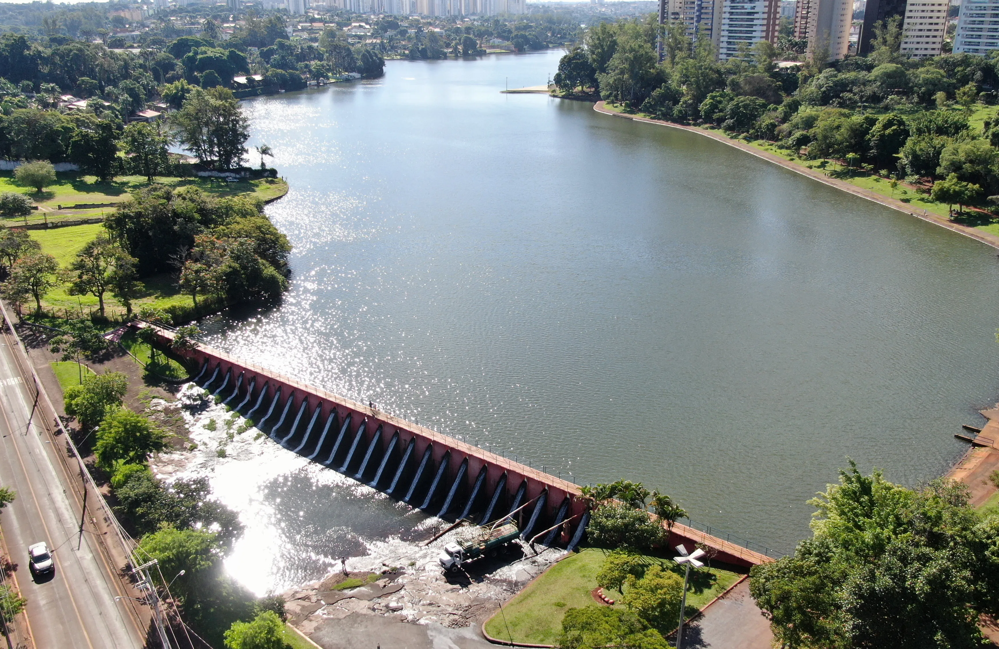
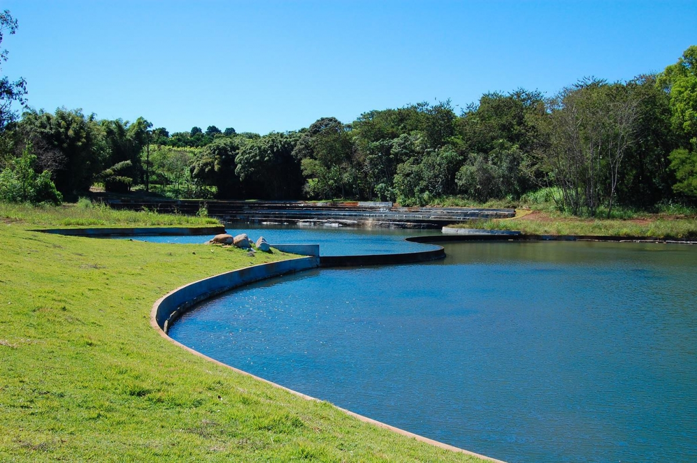
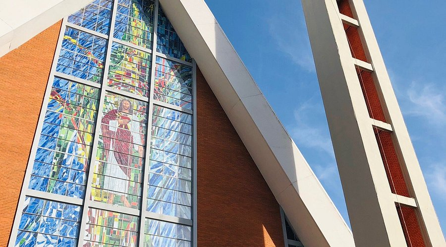

Lugares para ir em Londrina
Lago Igapó

O lago Igapó foi criado em 10 de dezembro de 1959. O nome Igapó vem da língua tupi-guarani, que significa transvazamento de rios.
Jardim Botânico

O Jardim Botânico de Londrina é uma unidade de pesquisa e conservação de espécies nativas no Paraná e é voltado para o cultivo de espécies raras e importantes da região.
Catedral Metropolitana de Londrina

A Catedral Metropolitana de Londrina, dedicada ao Sagrado Coração de Jesus, é um templo que pertence à Igreja Católica que fica na região central da cidade de Londrina.